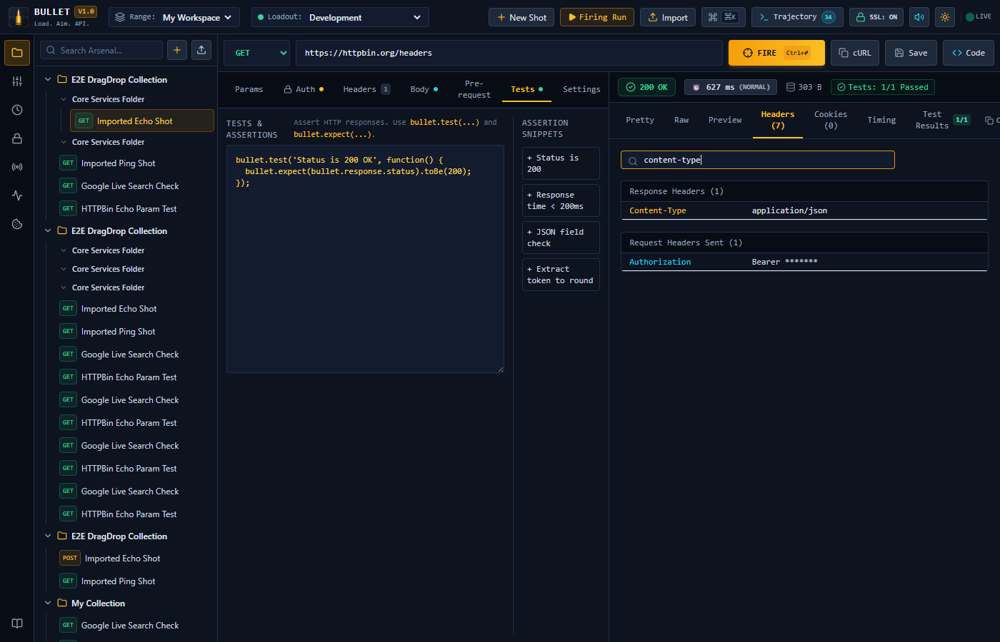
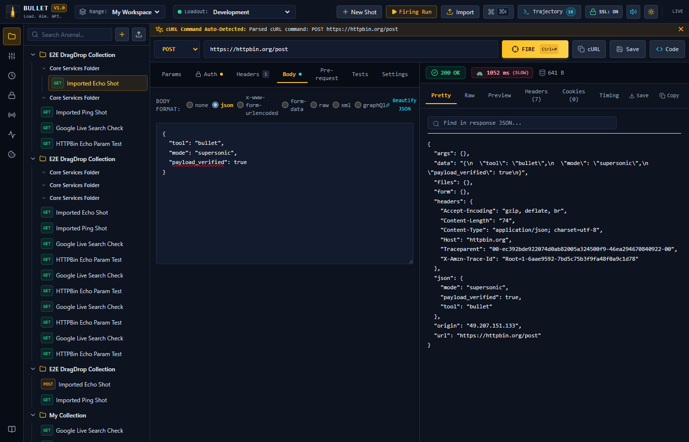

The high-velocity, offline-first API weapon. Sub-millisecond connection waterfalls, 100% Postman collection fidelity, built-in SSRF loopback shield, and native cross-platform binaries. Zero telemetry tracking.
Experience the microsecond telemetry waterfall and instant response rendering of the .NET 10 ballistic engine.
Most API clients only show you an aggregate duration. If a request takes 140ms, was it slow DNS resolution, a sluggish TLS 1.3 handshake, congested network TCP, or slow backend database processing?
BULLET intercepts socket-level events via high-performance EventListener telemetry hooks inside the .NET 10 SocketsHttpHandler, recording every transition with nanosecond precision.

No bloated WebViews, no forced cloud accounts, no hidden telemetry snooping on your internal APIs.
Nanosecond-precision breakdown of DNS, TCP handshake, TLS negotiation, and TTFB using custom SocketsHttpHandler probes.
Automatic shield blocking malicious redirection to private RFC1918 subnets (127.0.0.1, 10.0.0.0/8, 169.254.169.254 cloud metadata).
Drag-and-drop Postman collections and environments directly. Pre-request scripts and Chai test assertions run natively in Jint ES6 isolate.
Manage client PKCS#12 (.p12/.pfx) certificates, corporate Root CAs, self-signed validation bypass, and custom SSL ciphers.
Fire concurrent shots across collection folders. Real-time latency percentiles (p50, p95, p99) and CSV export for load verification.
Generate production-ready code snippets with 1 click in cURL, Python, Node.js Fetch, Go, C#, Rust, PHP, Java, Ruby, and Swift.
Zero-knowledge local SQLite database with AES-256-GCM encryption for API keys, bearer tokens, and session cookies. No cloud leaks.
True native desktop binaries for Windows x64 and macOS (Apple Silicon M1-M4 & Intel x64), Docker containers for CI/CD, and offline PWA.
Server Reflection auto-discovery, .proto schema parser, HTTP/2 binary framing execution, JSON message payloads, and trailers diagnostics.
Authorization Code (with PKCE S256), Client Credentials, Password, and Refresh Token grant flows with live token acquisition and auto-injection.
Click the views below to inspect the interface designed for speed, clarity, and precision.

Fine-tune request headers, auth tokens, URL query params, and JSON bodies with instant indentation beautification.
Comparison between legacy tools and the .NET 10 ballistic architecture.
| Capability | BULLET | Postman | Insomnia | Bruno |
|---|---|---|---|---|
| Cold Start Latency | < 300 ms | 8 – 15 s | 6 – 10 s | 2 – 4 s |
| RAM Footprint (Idle) | ~65 MB | 1.2 GB+ | 800 MB+ | 220 MB |
| Forced Cloud Account | NEVER (100% Offline) | Mandatory | Mandatory | None |
| Sub-ms Waterfall Telemetry | Built-in (DNS, TCP, TLS, TTFB) | Aggregate only | Basic | Basic |
| Postman v2.1 Script Fidelity | Full (pm.test, Chai, Jint) | Native | Partial | Custom syntax |
| Workspace & Collection Creation | Unlimited Local (Zero Account) | Locked behind Login | Locked behind Account | Local folder only |
| Collection Runner Limits | 100% Unlimited (UI & CLI) | 25 runs/mo paywall | Unlimited (Local) | Unlimited |
| Team Collaboration | Serverless WiFi Mesh P2P | Cloud Relay (Account) | Cloud Relay (Account) | Git repo only |
| Open Source & License | MIT (100% Free) | Proprietary Paid Tiers | Freemium Cloud | Open Core (Golden Edition $) |
Native binaries for Windows & macOS, containerized Linux for servers, and standalone PWA for browser docks.
Self-contained desktop application with native WebView2 runtime and microsecond SocketsHttpHandler.
# Install via PowerShell One-Liner
Invoke-WebRequest -Uri "https://github.com/VishalViswanathan03/bullet/releases/download/v0.0.2/Bullet-Setup-v0.0.2.exe" -OutFile "Bullet-Setup.exe"; .\Bullet-Setup.exexattr -cr Bullet.app to clear Gatekeeper quarantine.
Export any request into your favorite language with headers, auth, and payload ready to copy.
curl -X POST "https://api.bullet.dev/v1/bullets/fire" \
-H "Content-Type: application/json" \
-H "Authorization: Bearer bullet_secret_token" \
-d '{"caliber": "5.56 NATO", "target": "api.production"}'Built from the ground up for maximum throughput, isolation, and safety.
Ultra-responsive modern UI compiled to static assets. Supports real-time SignalR duplex streams, virtualized logs, and dark/light themes.
High-performance non-blocking async pipeline. Handles SocketsHttpHandler microsecond connection telemetry and SSRF loopback defense.
Isolated JavaScript execution for Chai assertions and pre-request scripts. Secrets stored in zero-knowledge AES-256 encrypted SQLite vault.
Read the deep-dive architectural specifications, CLI guides, and scripting references.
Decoupled server/client model, EventListener socket hooks, and IPC SignalR pipeline.
Headless execution, Docker Compose setup, environment variable flags, and port binding.
Pre-request hooks, pm.* API emulation, CryptoJS hashing, and dynamic environment manipulation.
Link-local subnet filtering, zero-knowledge AES-256 storage, and intranet access rules.
Chai assertion patterns, schema validation, multi-shot batch runners, and CI assertions.
Mutual TLS client certificates, custom PKI root authorities, and cipher enforcement.
No cloud login required. Free, open source, and built for developers who care about speed and privacy.